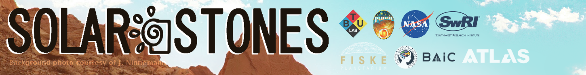
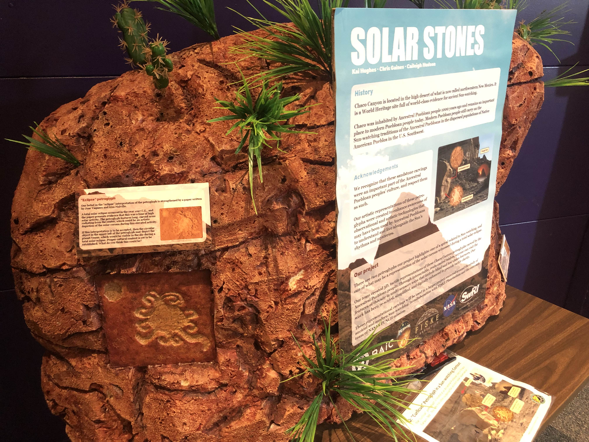
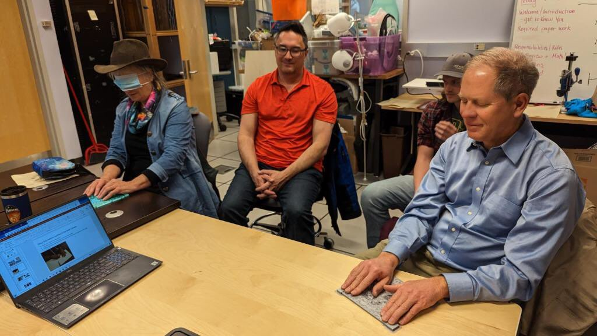

aug 2022 - ongoing <
Solar Stones is part of a collaboration centered around the study of the sun. Our team re-created rock carvings used to study ancient astronomy. The carved tablets were 3D printed, molded, cast in resin, then implemented into a larger educational exhibit. Exhibit posters were created in Adobe Illustrator.




Solar Stones is a collaborative project between a team of fabrication specialists, NASA, the SouthWest Research Institute, and FISKE Planetarium. It is part of the NASA PUNCH mission's outreach program. The project received a short TV segment as well as a blog post on NASA's website.
There are two petroglyphs the project highlights: One of a spiral, and one of a curlicue shape which could be interpreted as a solar eclipse. The spiral carving interacts with the summer solstice, and the curlicue carving could be a communal record of a total solar eclipse.
The carvings are located in Chaco Canyon, New Mexico. This is the home of the current Puebloan people, descended from the Ancient Puebloan people who inhabitated the area 1000 years ago. It has been documented that these people studied and tracked the sun, using it to guide festivities and keep track of time. The current Puebloans have allowed the outreach team to document and re-create replicas of some of their solar petroglyphs, which are an important part of their culture and history.
The carvings in Chaco Canyon are now protected and closed off to the public for conservation and preservation of history. They are only accessible through images and visual mediums. This limits these ancient stellar stories to a purely visual experience, and excludes blind and low vision learners.
Solar Stones creates a way for everyone to be able to learn about the Puebloan culture, and to be able to experience the wonder of space and history in a new way. These 3D, tactile representations of the petroglyphs make this intersectionality of native science and culture accessible to the public, and now include blind and low vision learners. The 3d model files are free to download on NASA's website so that they can be an easy to fabricate learning tool. The site also includes detailed instructions on how to 3D print the petroglyph tactiles, created to help those new to 3d printing.
Solar Stones is a part of NASA's PUNCH mission outreach and the Heliophysics Big Year.